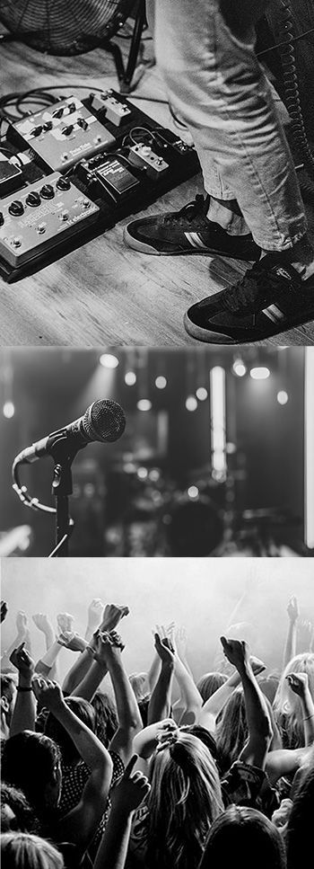

Upcoming? Promover din koncert
Vi elsker gode musikoplevelser.
Promover din koncert og kom på månedens program.
Om det er med stort sceneshow, stille intimkoncert, koncertcafé, på gaden, i Mølleparken, til privatfest, minifestival, til fredagsbar er lignende er ikke så vigtigt.
Vi har det tilfælles at vi elsker at spille og lytte til forskellig musik i alle genre.
I Aarhus har vi massere af dygtige musikere der spiller forskellige steder i byen.
Vi vil gerne bakke op om de dygtige musikere i byen og få så mange som muligt til at komme og nyde en god aften.
Hvis du elsker at performe og gerne vil promovere dine koncert på hjemmesiden, så skriv ind nu og kom på næste måneds programoversigt.
